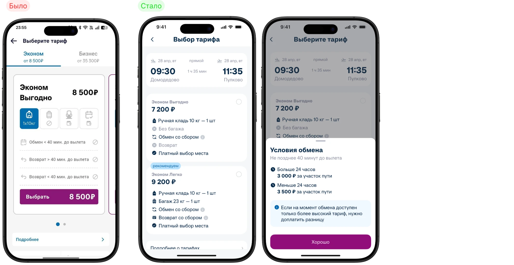
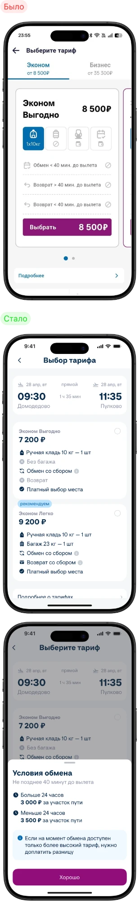

Если упростить структуру карточек и выделить ключевые условия тарифа, то повысится понятность предложения и сократится время на выбор
Боль
Пользователи не понимают, что входит в тариф
Решение
Упростить структуру карточки тарифа — убрать лишнее, оставить ключевые условия и показать их понятными иконками с короткими подписями преимуществ

